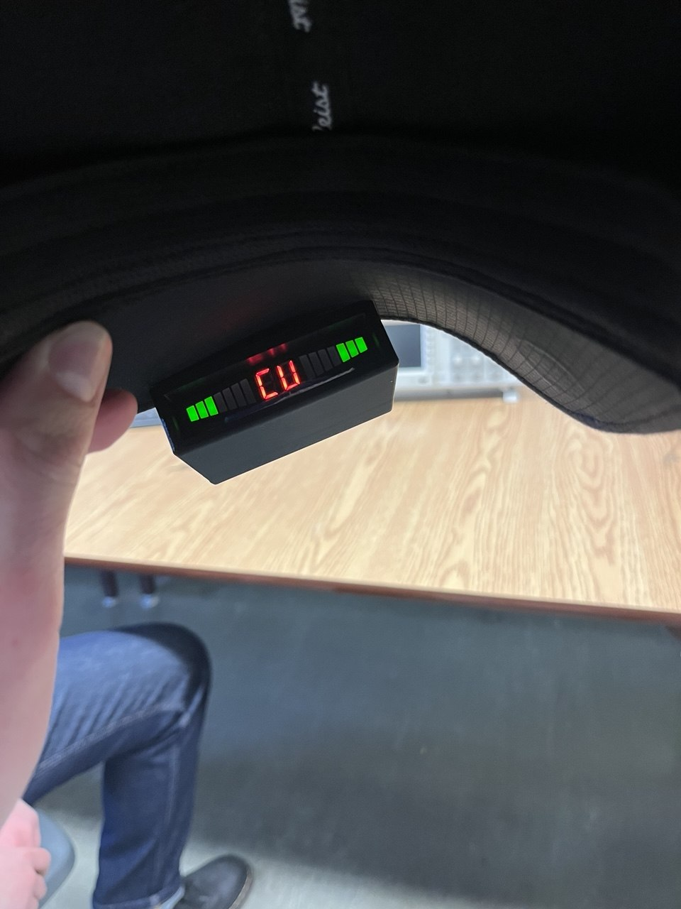
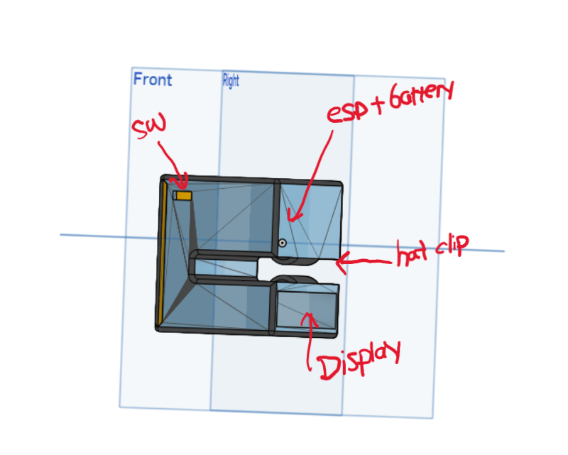

Wireless Visual Command System for Deaf Curlers
A wireless system built on ESP32 and ESP-NOW that gives deaf curling athletes real-time visual game commands through a handheld transmitter and a wearable receiver.

Built to help deaf athletes receive real-time curling commands without relying on sound. The system uses ESP32 boards communicating over the ESP-NOW protocol, with C firmware driving a multiplexed reversing-radar-style display that shows distinct visual instructions like "Curl" or "Line".
The hardware is packaged into two 3D-printed enclosures modeled in Onshape. The system consists of a handheld transmitter controller for the skip, and a wearable hat-mounted receiver for the sweeper.